1. Подготовьте все необходимые продукты для оливье. Картофель и морковь отварите в кожуре (20-25 минут; готовность овощей проверяйте ножом
или вилкой), остудите. Яйца сварите вкрутую (8-9 минут после закипания), остудите в холодной воде.
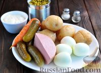
2. Картофель и морковь очистите.
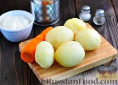
3. Нарежьте соленые огурцы. Выложите их на дно глубокой миски.
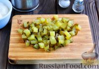
4. На огурцы выложите консервированный горошек.
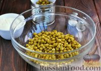
5. Нарежьте вареную колбасу мелкими кубиками, добавьте в миску с огурцами и горошком.
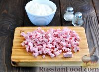
6. Морковь нарежьте мелкими кубиками, добавьте в миску.
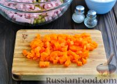
7. Картофель нарежьте мелкими кубиками и добавьте к остальным ингредиентам салата.
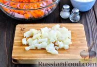
8. Яйца нарубите мелким кубиком, добавьте в салат с колбасой, горошком и овощами.
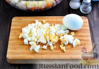
9. Заправьте оливье майонезом, смешанным со сметаной. Посолите, поперчите.
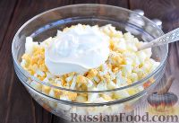
10. Перемешайте салат и дайте ему несколько минут настояться.
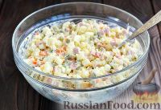
11. Приятного аппетита!!!
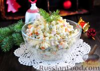